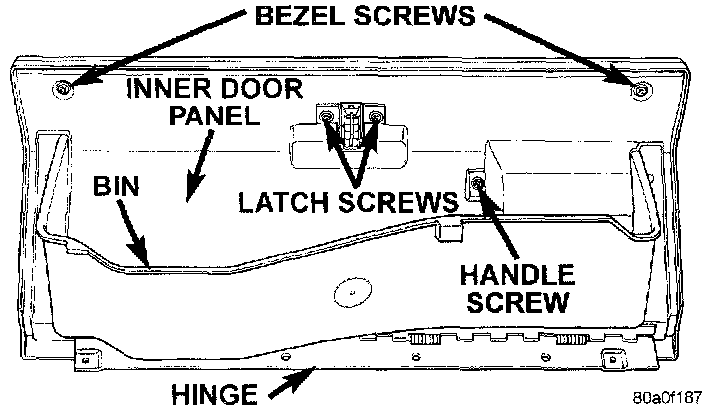
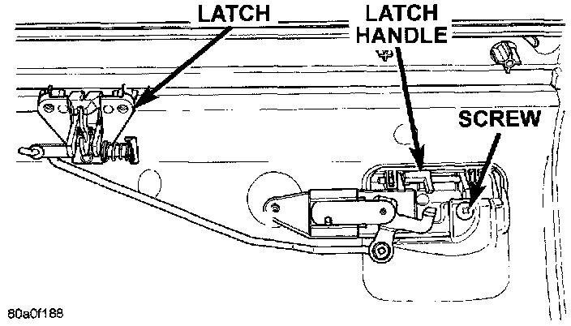
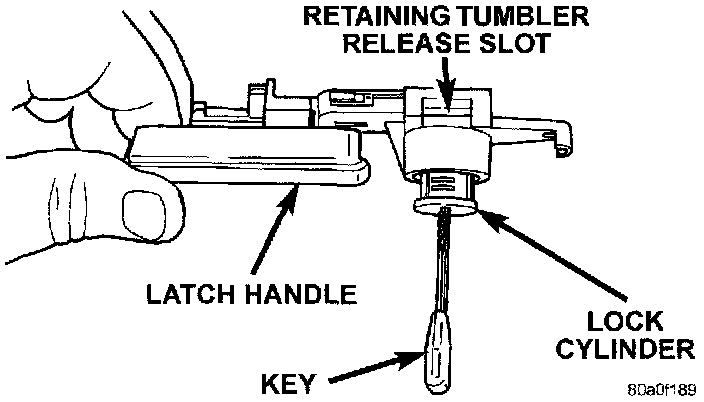

Glove Box Components
REMOVALThe glove box bezel is the only component of the glove box that can be serviced without glove box removal. All other components will require that the glove box be removed from the glove box module as described.
Glove Box Bezel
1. Open the glove box.
Glove Box Components:

2. Remove the two screws that secure the bezel at the top of the glove box inner door panel.
3. Carefully pry the bezel away from the outside of the glove box door. There is double-faced adhesive tape between the bezel and the outer door panel.
4. Reverse the removal procedures to install.
Glove Box Hinge
1. Remove the glove box as described.
2. Remove the screws that secure the glove box hinge to the glove box inner door panel.
3. Remove the glove box hinge.
4. Reverse the removal procedures to install.
Glove Box Bin
1. Remove the glove box as described.
2. Remove the glove box hinge as described.
3. Remove the screws that secure each side of the bin to the glove box door.
4. Remove the glove box bin.
5. Reverse the removal procedures to install.
Glove Box Latch And Handle
1. Remove the glove box as described.
2. Remove the glove box hinge and glove box bin as described.
3. Remove the two bezel screws, two latch screws, and one handle screw from the glove box inner door panel.
4. Remove the inner door panel from the glove box door.
Glove Box Latch And Handle Remove/Install:

5. Remove the second glove box latch handle screw.
6. Remove the latch and handle from the glove box door as a unit.
7. Reverse the removal procedures to install.
Glove Box Lock Cylinder
1. Remove the glove box latch and handle as described.
2. Insert the key into the glove box lock cylinder.
Glove Box Lock Cylinder Remove/Install:

3. Insert a small screwdriver into the retaining tumbler release slot and depress the retaining tumbler.
4. Pull the lock cylinder out of the latch handle by using a gentle twisting and pulling action on the key.
5. Reverse the removal procedures to install.